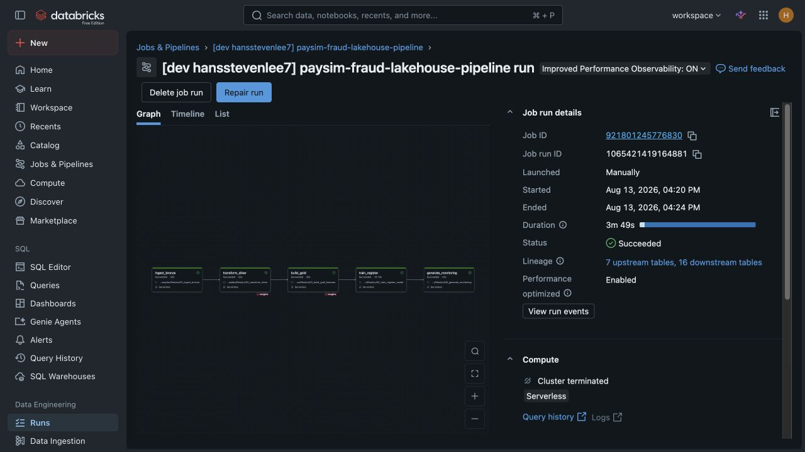
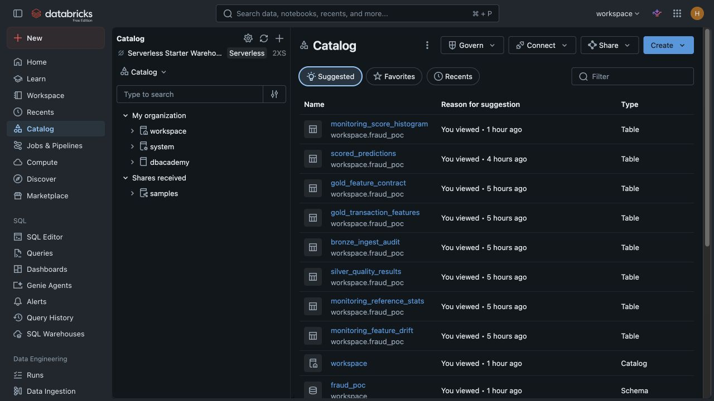
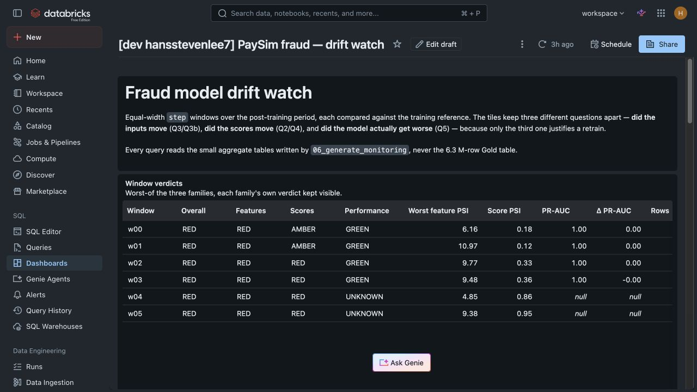
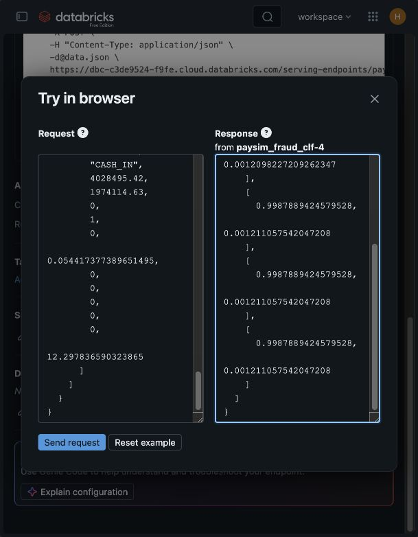

DATA ENGINEERING & MACHINE LEARNING · PROOF OF CONCEPT
Real-time mobile payment
fraud detection lakehouse.
From raw transactions to governed features, online scoring and monitoring. A Databricks POC built around Bronze, Silver and Gold data products.
Synthetic PaySim data. Batch ingestion and monitoring; “real-time” refers to the scoring interface.
01 / THE DELIVERY PATTERN
A lakehouse with evidence at every stage.
The aim was to connect the full workflow: preserve raw data, make quality checks visible, define what the model can know before a payment, then expose predictions and monitoring for review.
Medallion architecture
- 01 / BRONZE
Raw & auditable
Explicit-schema transaction ingestion with source metadata, malformed-record quarantine and an ingest audit.
Ingestion notebook ↗ - 02 / SILVER
Clean & validated
Typed transactions, data-quality results and rejected records preserved with reasons. Duplicate rows are flagged.
Quality notebook ↗ - 03 / GOLD
Curated & governed
Fourteen pre-transaction features, a machine-readable feature contract and chronological model splits.
Feature notebook ↗
Storage uses Databricks-managed Unity Catalog volumes and Delta tables in an AWS S3 cloud context.
Track → register → score
MLflow tracks model comparisons and evaluation. Unity Catalog registration connects the chosen model to a single-transaction scoring endpoint.
Training & registration ↗Observe → investigate
Separate input drift, score drift and measured performance. Dashboard source also covers simulated financial impact and an hourly operational replay.
Dashboard SQL ↗02 / RECORDED WORKSPACE EVIDENCE
Inside the Databricks POC.
Original workspace screenshots from the project report. These show a recorded execution; endpoint health and workspace state have not been reverified. Select an image to open it at full size.

One repeatable workflow.
The recorded run completed five dependent serverless tasks in 3 minutes 49 seconds, with 7 upstream and 16 downstream tables in lineage.
Job definition ↗
Outputs you can inspect.
Catalog objects include the feature contract, quality results, ingestion audit, scored predictions and drift aggregates.
Schema & feature contract ↗
Drift does not prove decay.
The dashboard keeps feature, score and performance signals separate. Recent windows without labels show UNKNOWN performance.
Monitoring dashboard SQL ↗
A contract-valid request and response.
The report records five CASH_IN requests returning five two-class probability vectors from model version 4. This is a serving health check.
Endpoint deployment & checks ↗03 / SCOPE & REPRODUCIBILITY
What the evidence supports.
This is an educational technical POC using synthetic PaySim transactions. The source release records 488 passing local tests and three optional MLflow tests skipped on 15 October 2026. Local tests cover contracts and calculations; they do not execute the Databricks workspace.
PaySim contains simulator artefacts. Model metrics do not establish performance on real payments. The financial-impact and operations dashboards use simulation assumptions; their outputs are estimates.
The public repo contains notebook source, reusable Python modules, dashboard SQL and Asset Bundle definitions. It documents the implementation, recorded results and production-hardening gaps.